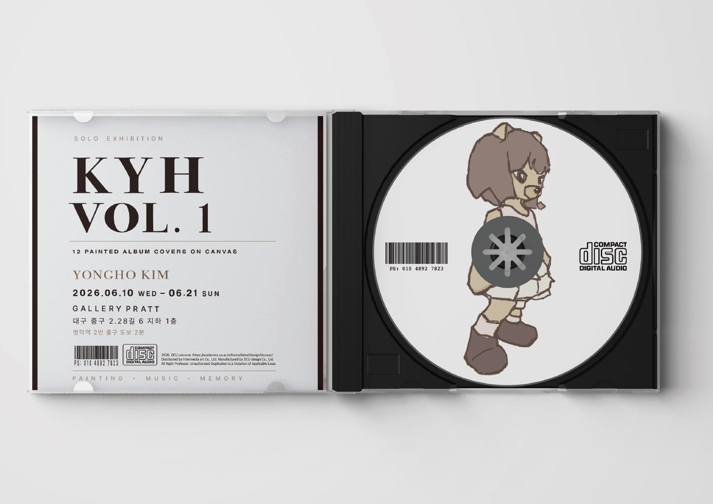
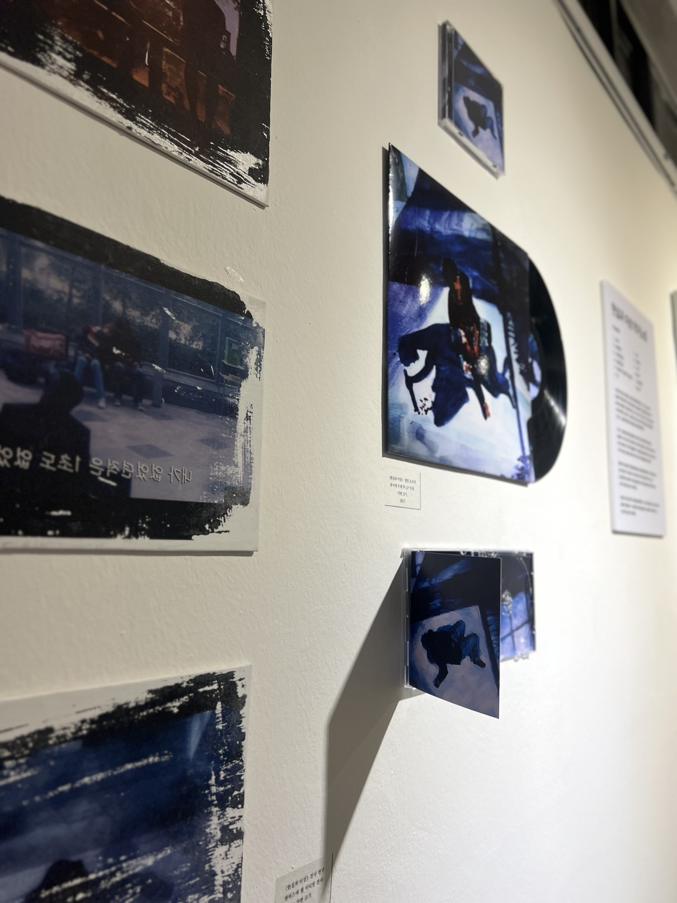
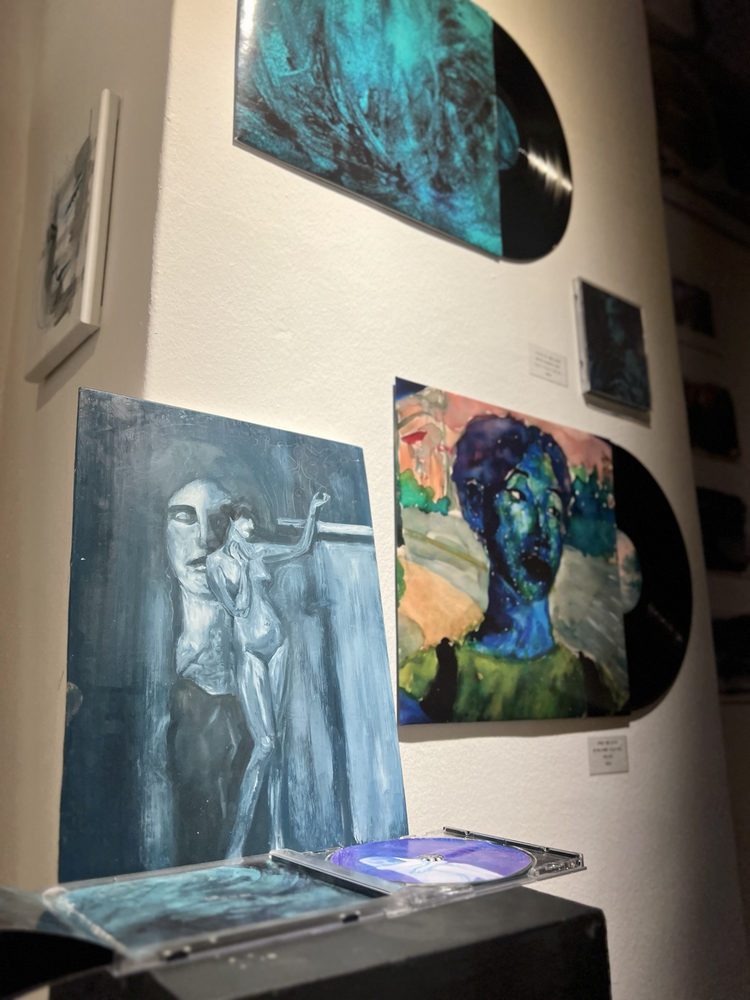
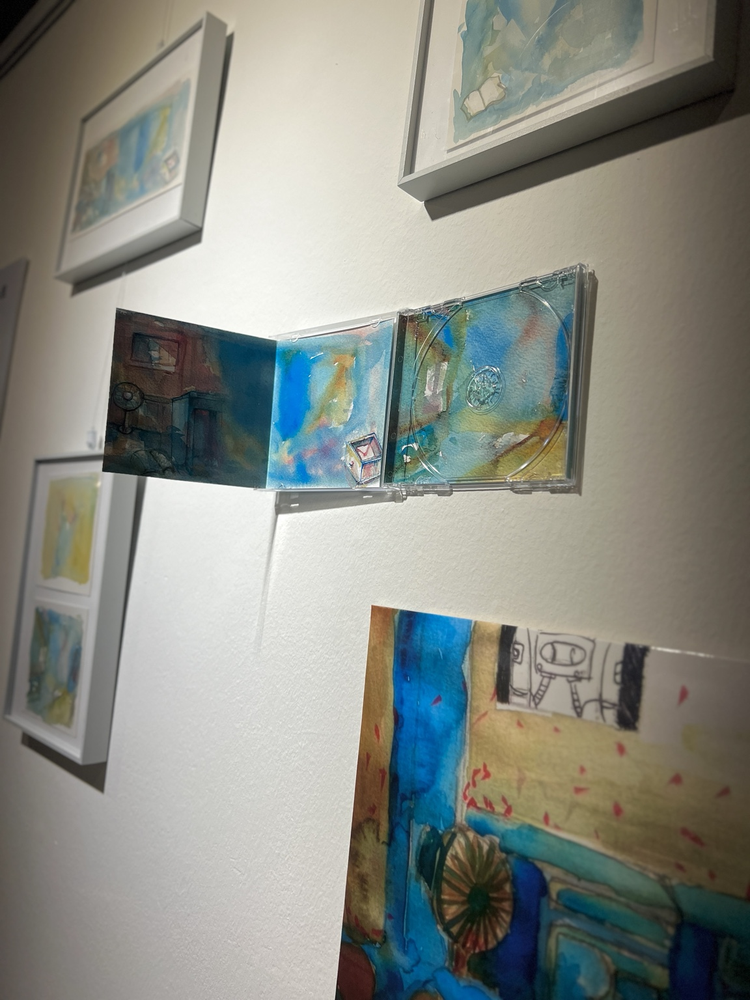
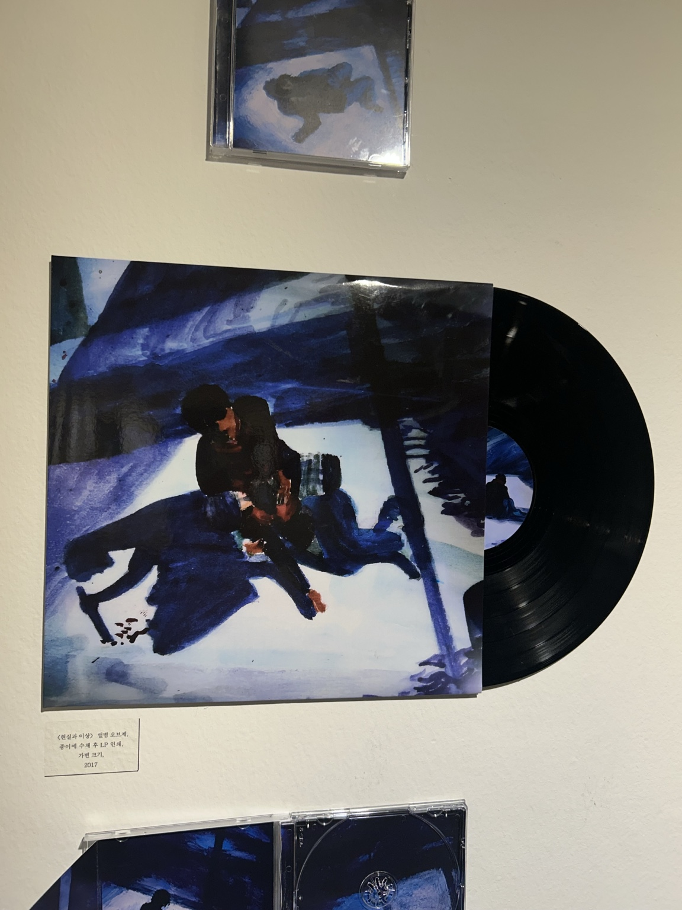
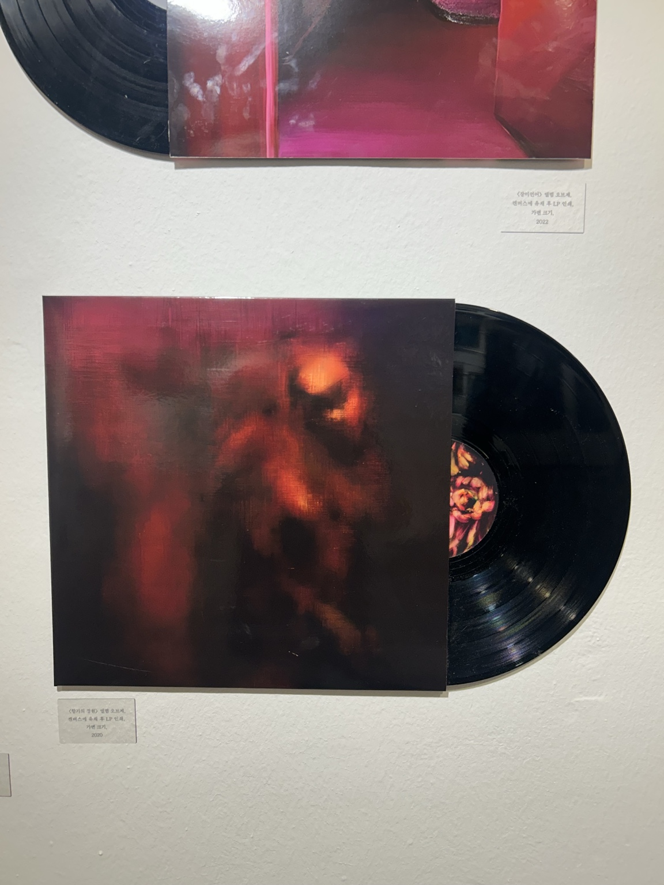
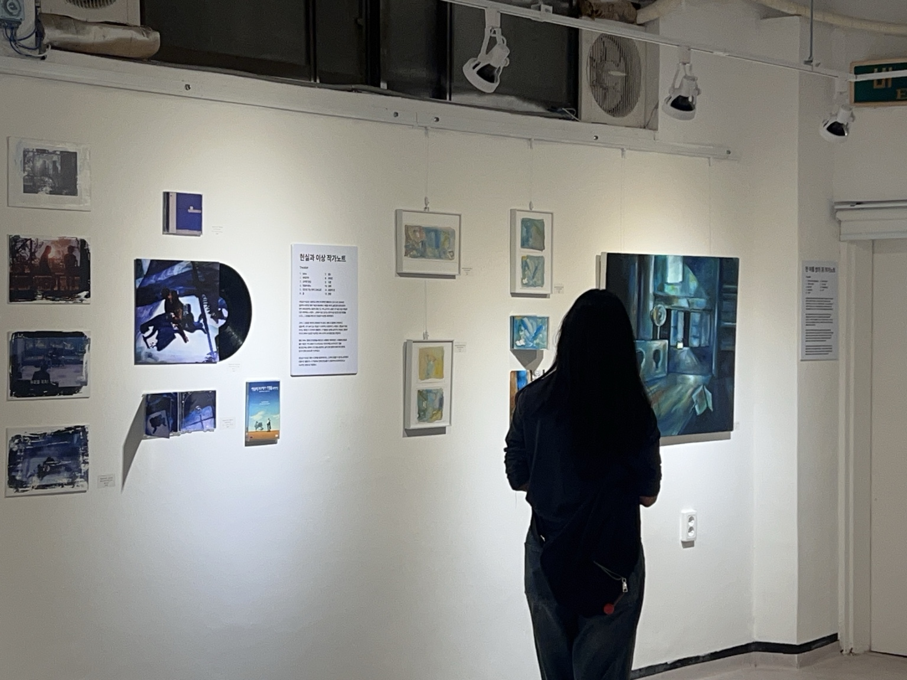
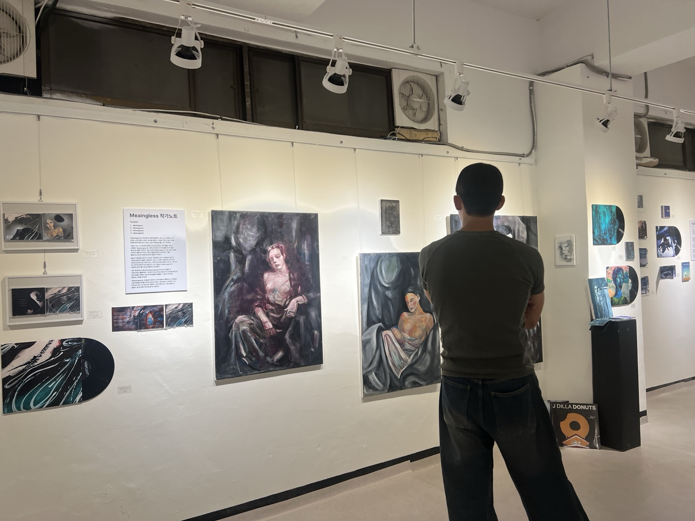
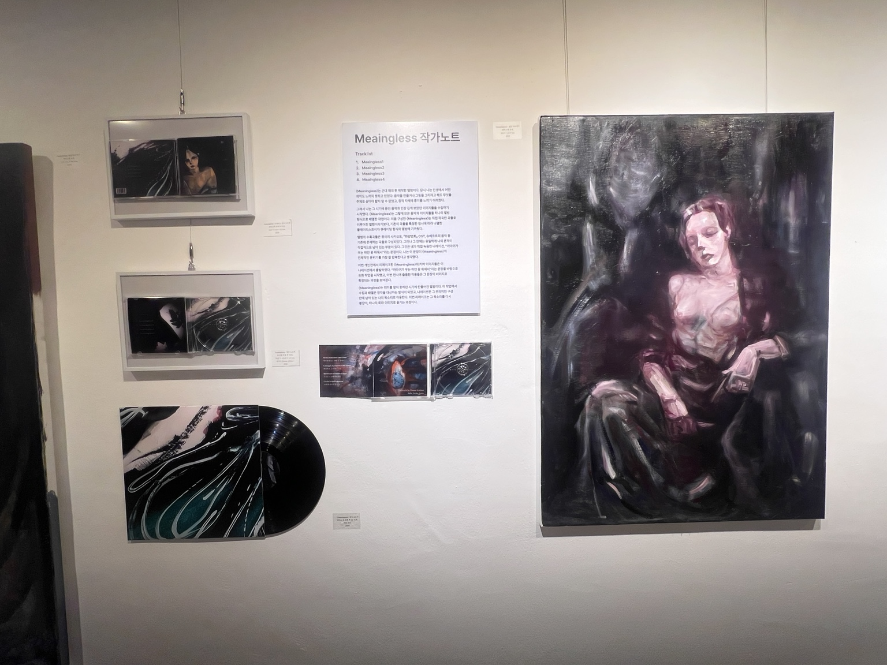
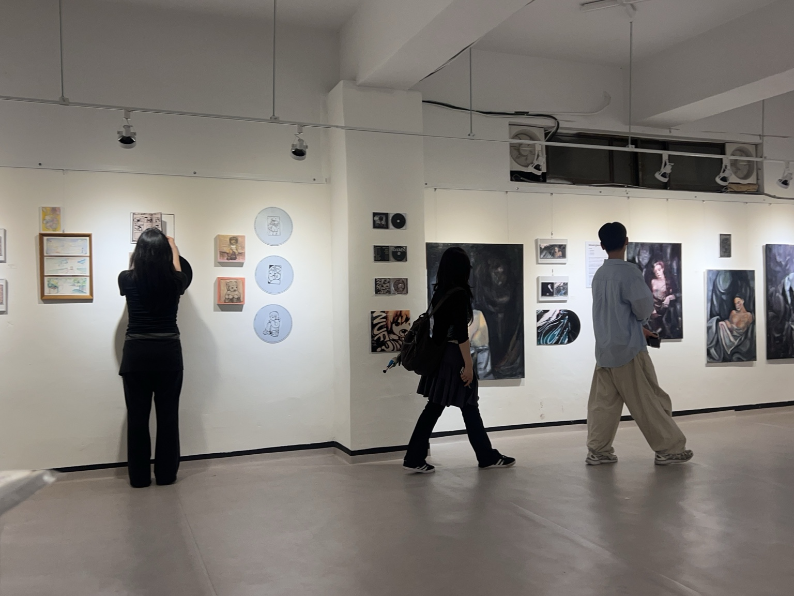

BETWEEN SOUND
AND IMAGE.
그림 한 점을 보여주는 대신, 음악과 이미지가 관계를 맺는 방식을 하나의 전시로 구성했습니다.
앨범커버에 대한 관심에서 출발해 음악을 들으며 떠올린 장면과 감정을 회화로 옮겨 왔습니다. 각 이미지는 독립된 작품이면서 동시에 하나의 음반을 상상하게 하는 표지가 되었습니다.
05 / SOLO EXHIBITION & INTERMEDIA
음악과 이미지를
어떻게 하나의 전시 경험으로 확장할 것인가?

SOLO EXHIBITION / GALLERY PRATT
KEY VISUAL / 2026
01 / ORIGIN
그림 한 점을 보여주는 대신, 음악과 이미지가 관계를 맺는 방식을 하나의 전시로 구성했습니다.
앨범커버에 대한 관심에서 출발해 음악을 들으며 떠올린 장면과 감정을 회화로 옮겨 왔습니다. 각 이미지는 독립된 작품이면서 동시에 하나의 음반을 상상하게 하는 표지가 되었습니다.

IMAGE
MEETS
SOUND
02 / CONCEPT
캔버스만 거는 방식에서 벗어나 LP, CD 케이스, 인쇄물을 실제 전시 요소로 사용했습니다.
평면 이미지를 음반이라는 오브제로 확장하고, 관람객이 회화와 음악의 형식을 오가며 작품을 읽도록 전시 언어를 설계했습니다.


03 / CURATION
서로 다른 시기에 만든 12점의 앨범커버 회화를 하나의 개인전 안에서 다시 분류하고 연결했습니다.
작품의 색감과 정서, 음반 오브제의 형태를 기준으로 벽면의 리듬을 만들고 개별 작업이 하나의 전시 서사로 이어지도록 구성했습니다.


04 / SPACE
회화, LP, CD 케이스, 작가노트와 스케치를 한 공간 안에 함께 배치했습니다.
관람객이 벽면을 따라 이동하며 이미지의 크기와 재료가 바뀌는 과정을 경험하고, 가까이 다가가 음반의 세부를 살펴볼 수 있도록 시선의 흐름을 조율했습니다.


05 / RESEARCH
대학원에서 연구한 음악과 이미지의 관계를 실제 공간에서 검증하는 전시로 확장했습니다.
논문에서 다룬 매체 간 관계를 회화, 음반 오브제, 텍스트의 조합으로 번역해 연구와 창작이 같은 경험 안에서 만나는 지점을 만들었습니다.

06 / RESULT
아이디어의 출발부터 작품 선별, 공간 구성, 매체 제작과 시각 방향까지 하나의 프로젝트로 완성했습니다.
개별 회화를 보여주는 데서 멈추지 않고, 음악과 이미지의 관계 자체를 관람객이 걷고 바라보는 전시 경험으로 만들었습니다.

ALL PROJECTS
BACK TO INDEX →